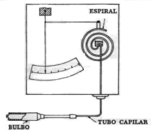
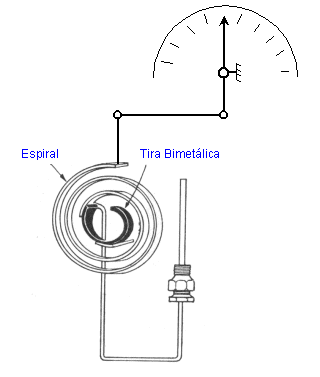
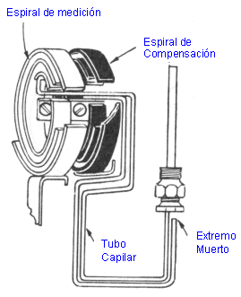
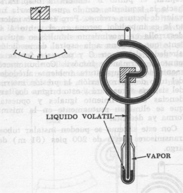

SISTEMAS TERMICOS DE RELLENO
| Se fundamenta en la acción elástica de espirales, fuelles y diafragmas que transmiten un movimiento angular o lineal cuando cambia la variable, actuando sobre ellos una presión. Los cambios se originan en un bulbo, lleno de gas o líquido que cambia sus características físicas con la temperatura; este cambio es transmitido a la espiral ( u otro elemento secundario de medición ), mediante un tubo capilar que es prolongación del bulbo. Estos termómetros son muy robustos, requieren poco mantenimiento, la sensibilidad, velocidad de respuesta y precisión es comparable con los otros tipos de termómetros. El capilar puede transmitir la variable hasta 120 metros. El sistema es autoabastecido de energía y capaz de mover no sólo la pluma indicadora sino elementos de control. |
 |
TIPOS DE COMPENSACION
Para contrarrestar los efectos de la temperatura ambiente se utilizan dos tipos de compensación.
COMPENSACION DE CAJA
|  | Consiste en sujetar el extremo de la espiral medidora a una tira bimetálica y el otro extremo de está última se fija a la caja del instrumento. La variación del ambiente moverá la indicación del instrumento en un sentido y la bimetálica la moverá en sentido contrario de tal suerte que el movimiento resultante en la pluma por efectos de los cambios en la temperatura ambiente es cero. La compensación de Caja se utiliza en los Sistemas térmicos de relleno en los que la longitud del capilar supere los 5 m de longitud. |
COMPENSACION
COMPLETA
| Es
otro sistema termal pero sin bulbo colocado de tal modo que la expansión
de la espirales son opuestas y por tanto cualquier variación
de temperatura en la caja o el capilar se nulifican. |
 |
CLASES DE SISTEMAS TERMALES
LLENOS DE LIQUIDO NO METALICO
Por el tipo de compensación pueden ser:
- Clase I A con compensación completa.
- Clase I B con compensación de caja.
Los límites
de temperatura que pueden medir dependen del líquido empleado,
variando de 125 a 600º F.
La posición relativa del bulbo y la caja de medición no
influyen mayormente en el valor de la respuesta.
La reducida conductividad térmica hace que la lectura no sea inmediata.
Los líquidos utilizados que deben ser de baja viscosidad son: Tetrahidronaftaleno
para altas temperaturas, metaxileno para las medianas y alcohol etílico
en temperaturas menores.
LLENOS DE LIQUIDO EN EQUILIBRIO CON SU VAPOR CLASE II
El bulbo está llenado parcialmente con un líquido altamente volátil, el resto del mismo, el tubo capilar y la espiral de medición se llenan con vapor del mismo elemento.
Existen
cuatro subdivisiones y son:
Clase II A diseña para trabajar con la temperatura de proceso por
arriba del resto del sistema termal.
Clase II B diseña para operar con la temperatura de proceso por
debajo del resto del sistema termal.
Clase II C que opera con la temperatura de proceso por arriba y por abajo
del resto del sistema termal.
Clase II D que opera con la temperatura de proceso por abajo, por arriba
y al mismo estado que el resto del sistema termal.

Los elementos termométricos más utilizados son:
Etano a 20 psi., hasta 600 psi.
Propano en iguales condiciones.
Eter Metílico, Cloruro de Etilo, Eter Etílico, Alcohol Etílico.
LLENOS DE GAS CLASE III
Son llenados con un gas inerte y se utiliza para medir temperaturas bajo y sobre ambiental.
Los gases utilizados usualmente son nitrógeno y helio tienen compensación de caja y completa y según ello se clasifican en clase III B y III A respectivamente.
LLENOS DE MERCURIO CLASE IV
La temperatura mínima está limitada por el punto de congelación del mercurio ( -39º C ) y el valor máximo superior es de 500º C debido a su aceleración en el incremento de la presión de vapor. La escala es uniforme ya que la expansión es lineal con el aumento de temperatura.
El mercurio utilizado es de triple destilación y se introduce en el sistema practicando previamente un vacío, la presión inicial está entre 400 y 1000 psi. Esta presión se obtiene fácilmente con la ayuda de un aditamento tornillo tuerca hasta darle a la espiral una desviación predeterminada.
El error por diferencia de niveles entre el bulbo y la espiral de medición es muy considerable por cuanto el mercurio es altamente denso. La diferencia de niveles es fácilmente compensada con un ajuste de cero.
Tienen
una protección de sobrerrango de hasta el ciento por ciento del
alcance.
 |